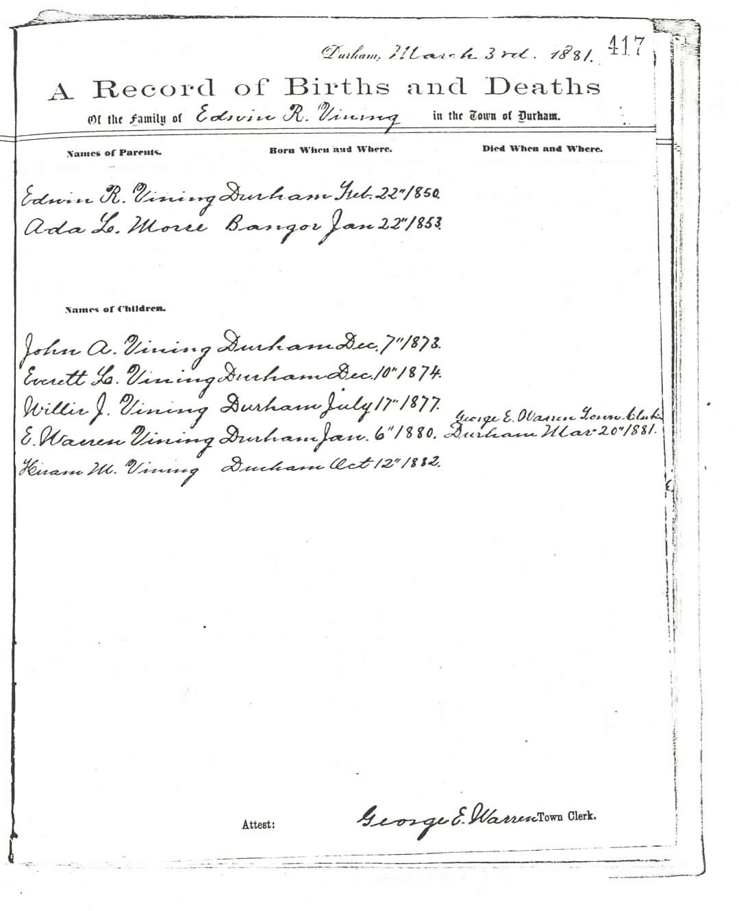
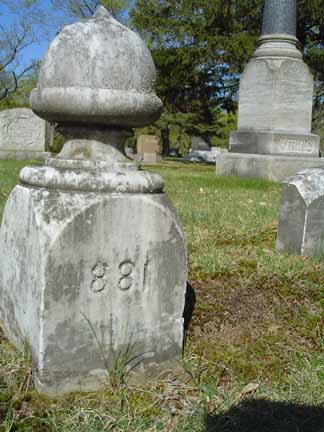
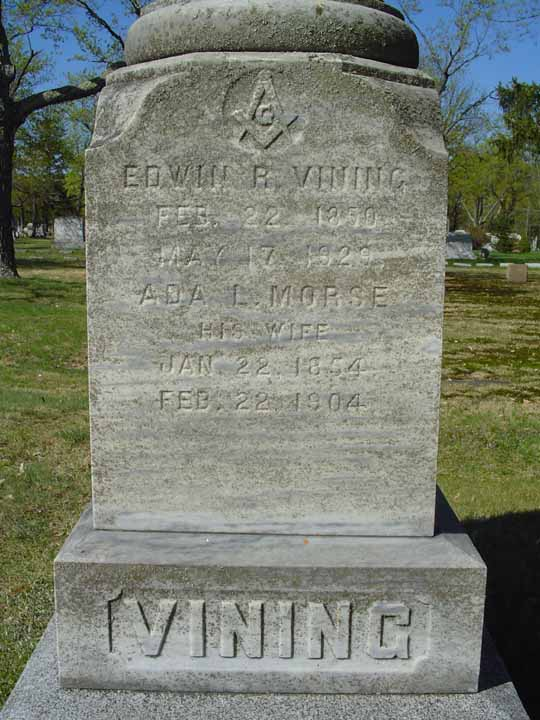
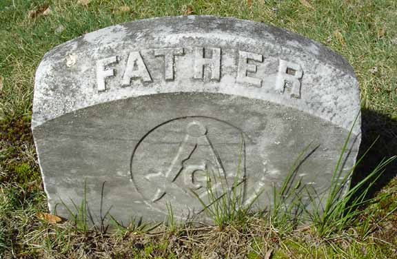
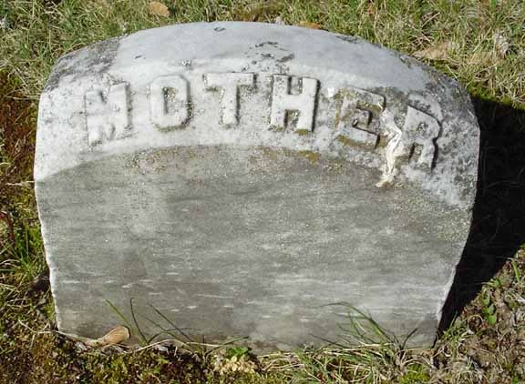
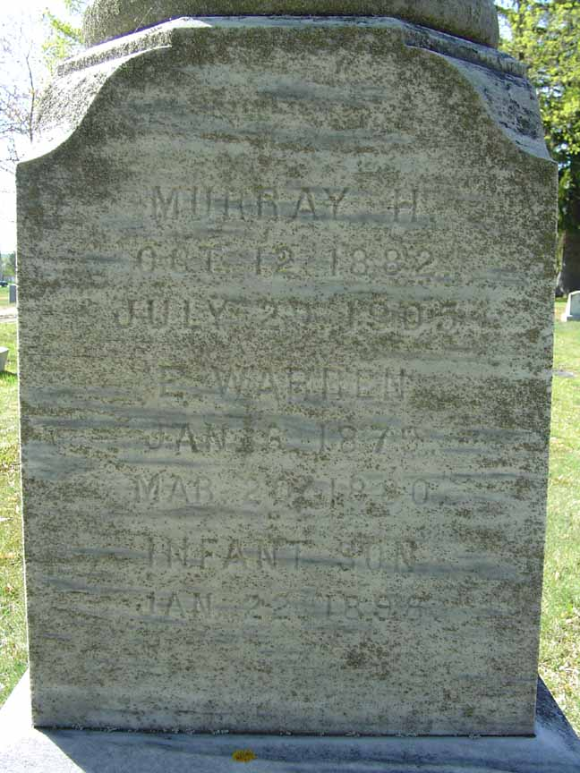
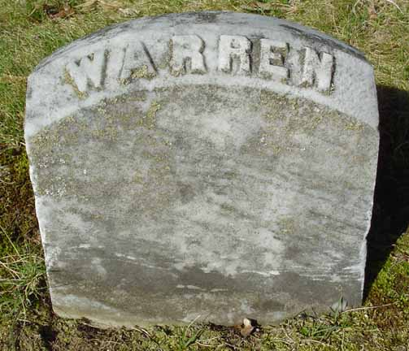
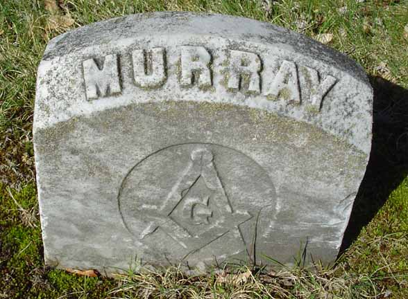
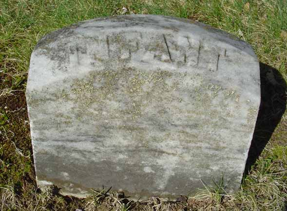

Family Data
The town of Durham, Androscoggin County, Maine, has photocopied its vital record books, and those photocopies are available for public viewing. Although much of the photocopied material is very difficult to impossible to read, the family record of Edwin R. Vining and Ada L. Morse is extremely clear. Below is the 3 March 1881 page (greatly enlarged) with subsequent additions reporting that family.
Census Data
| 1880 | 1890 | 1900 | 1910 | 1920 | 1930 | |
| Edwin R. Vining | 30 | ? | ? | ? | ? | dead |
| Ada L. (Morse) Vining | 26 | ? | 46 | dead | ||
| Flora (Hutchinson) Vining | ? | ? | ? | |||
| John Albion Vining | 6 | ? | married and living in separate household | |||
| Everett L. Vining | 5 | ? | married and living in separate household | |||
| Willis Josiah Vining | 2 | ? | living in separate household | |||
| Emory Warren Vining | 4 m. | dead | ||||
| Hiram Murray Vining | ? | living in separate household | dead | |||
| Addie Pride Vining | ? | 14 | ? | ? | ? | |
| Merton L. Vining | ? | 12 | ? | married and living in separate household | ? | |
| Albert Edwin Vining | 8 | ? | ? | married and living in separate household | ||
| (son) Vining | dead | |||||
| Mildred Louise Vining | 6 m. | ? | ? | married and living in separate household |


Death Data
Cemetery lot, headstone (full view and close-up), and individual stones for Edwin R. Vining and Ada L. Morse, his first wife, in Mount Auburn Cemetery, Auburn, Androscoggin County, Maine:






